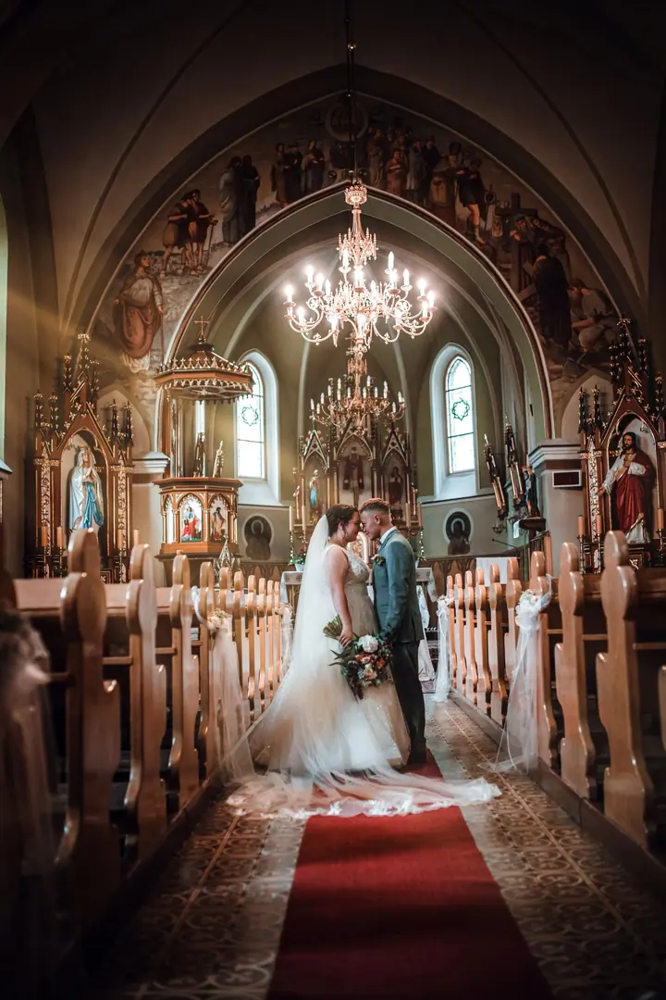
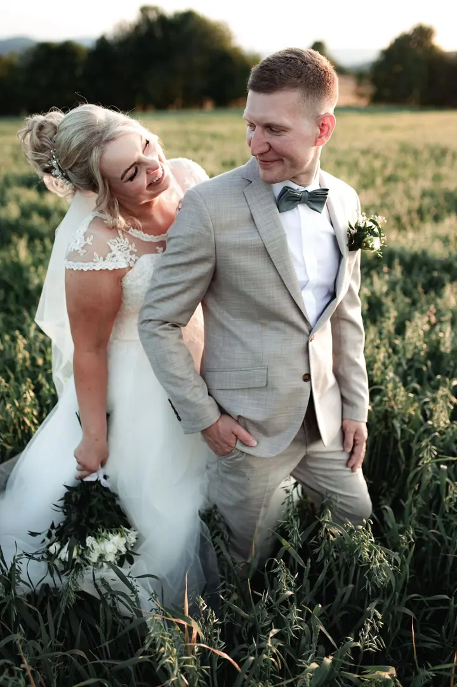
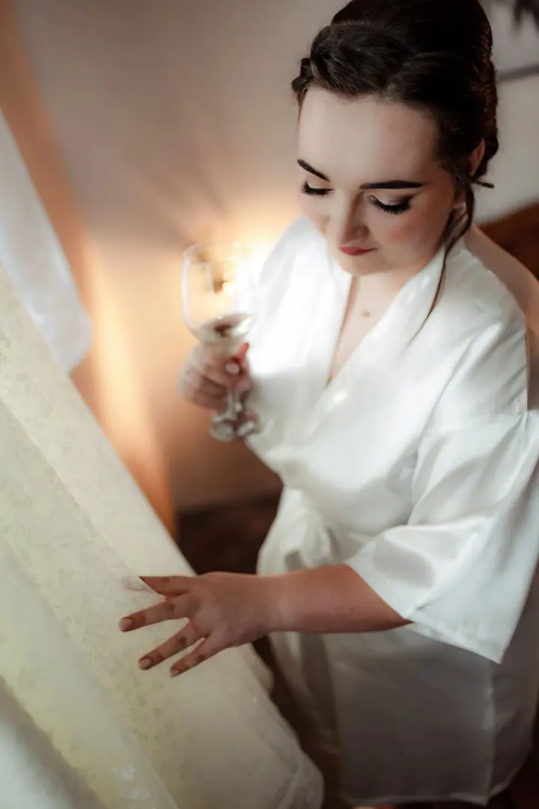
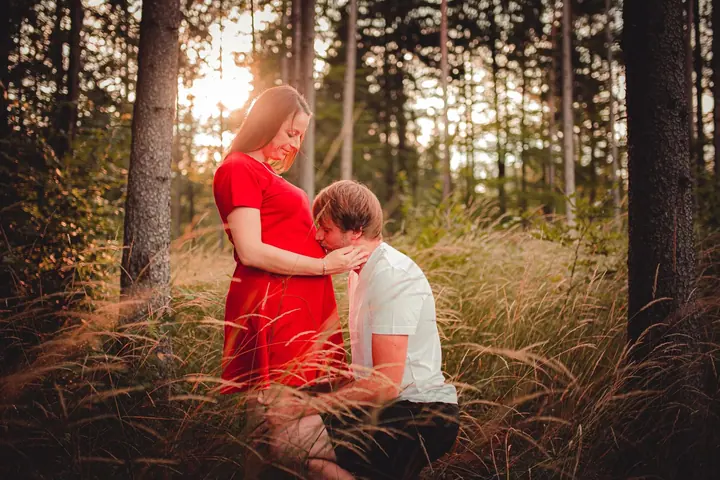

jedna
Svatby
Svatební den je plný emocí, které si zaslouží zůstat. Fotím přípravy, obřad i chvíle ve dvou venku, s kolegou Michalem Bocem umíme připravit i originální svatební klip.

Svatební a rodinný fotograf · Třinec, Moravskoslezský kraj

Jmenuji se Tomáš Brzezina a fotím svatby, rodiny a portréty v okolí Třince i po celém Moravskoslezském kraji. Spolu s Michalem Bocem tvoříme pod značkou MBTB ART fotky i svatební klipy, každý trochu jinak a vždy podle vás.
Více o mně
Co fotím
jedna
Svatební den je plný emocí, které si zaslouží zůstat. Fotím přípravy, obřad i chvíle ve dvou venku, s kolegou Michalem Bocem umíme připravit i originální svatební klip.
dvě
Čas letí, děti rostou, ale společné chvíle zůstávají. Fotíme venku a v klidu, ať si focení užijí i ti nejmenší.
tři
Portrét, který zachytí vaši náladu a to, jací opravdu jste. Rád pracuji s přirozeným světlem a prostředím.
Přátelská setkání, oslavy a večírky. Vše, co tvoří váš svět, zachytím tak, jak to prožíváte.
Každý snímek má svůj příběh

Za objektivem
Moje cesta k fotografii byla jednoduše klikatá. První foťák jsem si koupil jen tak před dovolenou, abych si domů odvezl hezké fotky. Malý levný kompakt mi ale brzy přestal stačit a zatoužil jsem po zrcadlovce.
Digitální zrcadlovka mě okouzlila jako malého kluka, který dostal svůj první nožík. Od té doby fotografií vyjadřuji pocity a nálady a zachycuji portréty a životy lidí kolem sebe.
Dnes fotím společně s Michalem Bocem jako MBTB ART. Zakládáme si na kvalitě, ne na kvantitě, a každou svatbu i video tvoříme jinak. Trocha prachu, spousta srandy a práce, na kterou jsme hrdí.
Tomáš
Napište mi termín a pár slov o tom, co plánujete. Ozvu se a domluvíme se, jestli máme volno.
Probereme, jak si den nebo focení představujete, jaká místa máte rádi a co je pro vás důležité.
V den focení jsem s vámi, nechávám věci plynout a zachytím je tak, jak je prožíváte.
Fotky pečlivě upravím a připravím pro vás. Pokud máte zájem i o klip, Michal ho střihne originálně podle vašeho dne.
Portfolio
Otázky
Svatební focení začíná od 16 000 Kč. Přesnou cenu vám rád připravím podle délky a rozsahu dne, ceny držíme férové.
Ano, s kolegou Michalem Bocem tvoříme i svatební klipy. Každé video stříháme jinak, podle vašeho příběhu.
Nejčastěji v Třinci a okolí v Moravskoslezském kraji. Když budete chtít jinam, rád se domluvím.
Určitě. Nezveřejněnou tvorbu posíláme klientům do zpráv, stačí se ozvat.